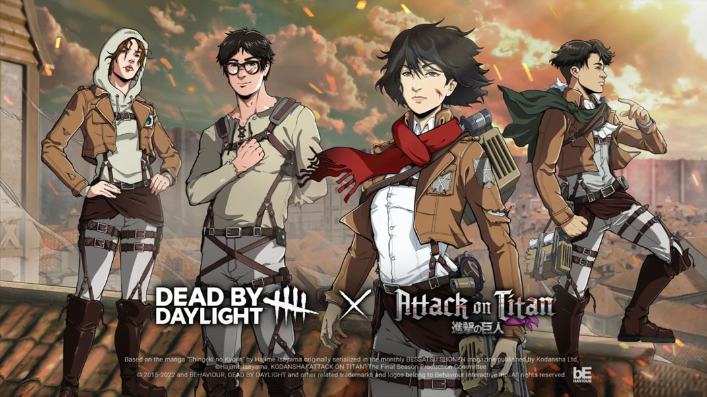
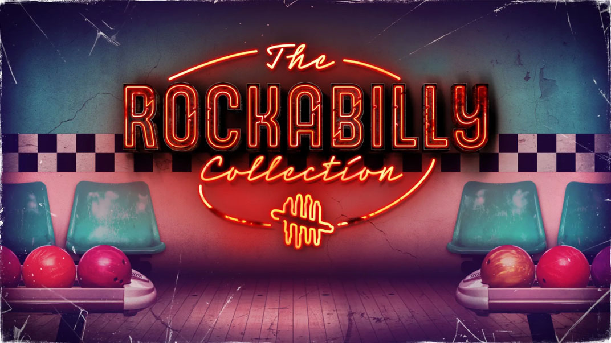

Noticias
¡Aniversario Nro. 6!
El evento del sexto aniversario de Dead by Daylight ya está aquí, con una nueva oferta, ganchos y generadores con temas de eventos y lujosas recompensas cosméticas para Killers y Survivors.

Capitulo 24: Roots of dread ya esta disponible.

Cuando el crepúsculo se vuelve completamente oscuro, llega. El capítulo Roots of Dread de Dead by Daylight ha llegado, con un nuevo Killer, The Dredge, y un nuevo Survivor, Haddie Kaur. Juntos, traen seis nuevas ventajas únicas a The Fog. Un nuevo mapa, el inquietante Garden of Joy, está disponible para todos los jugadores, al igual que una nueva ventaja general, Shattered Hope. La compra de este complemento en las tiendas de la plataforma también desbloquea un atuendo exclusivo para Haddie: The Pale Ribed Shirt.
Tomo 12: Discordance muy pronto.

Cuando la realidad se desmorona, la locura nunca se queda atrás. La percepción se tuerce y la razón se desmorona en el Tomo 12: DISCORDANCE, que presenta nuevos recuerdos para The Blight, Jonah Vasquez y House of Arkham. Continúe con sus historias completando los desafíos que se encuentran en cada uno de los cuatro niveles del Tomo.
Attack on Titan: Colección de cosmeticos

Eren, Mikasa, Armin, Armored Titan, War Hammer Titan, ellos, y muchos más, forman la base de esta colosal colección, que vuelve a imaginar a Survivors y Killers como personajes de Attack on Titan.
Rock a Billy: Colección de cosmeticos

No importa cuántas veces te sacrifiquen, el rockabilly nunca morirá. Al menos, eso es lo que siguen diciendo estos tres Supervivientes. Puede que no les creas, pero tienes que admirar el valor. Después de todo, la nostalgia es una herramienta crucial para mantener la humanidad, y nostalgia tendremos, gracias a estos nuevos y elegantes estilos.